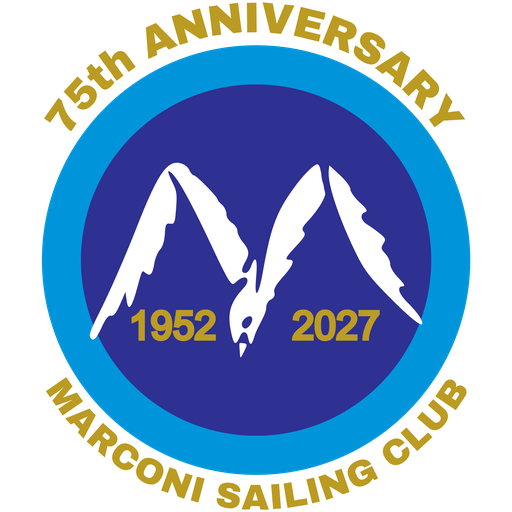

N +10 years · S −10 years · E next year · W previous year · or type a year in the middle

Monthly bulletin of Marconi Sailing Club, since 1957
To ask for something about you to be removed, to report a mistake, or to offer a missing issue, email .